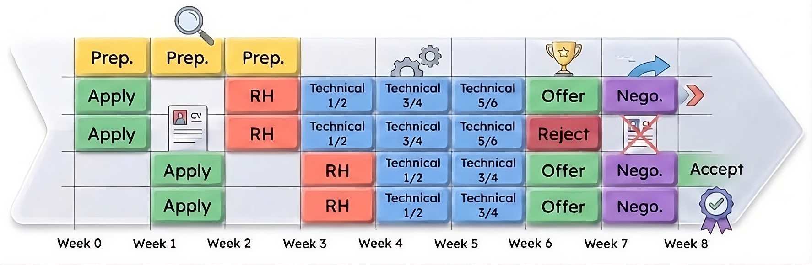
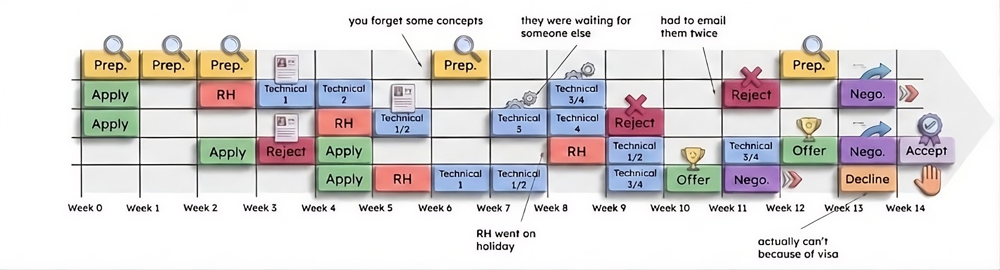

|
FREN Guide complet de recherche d'emploi en TechPar Tom Marty, en cours de rédaction 
Ce guide s'adresse aux étudiants et jeunes diplômés actuellement à la recherche d'un poste dans l'industrie de la Tech. Bien qu'il soit destiné en particulier aux profils de Research Engineer et Research Scientist, il contient nombre d'informations qui vous seront utiles pour l'ensemble des métiers techniques de ce secteur. Venant moi-même de chercher du travail pendant plusieurs mois, ce guide se veut être l'héritage de ces mois de recherche, il y regroupe tout mes conseils, mon retour d'expérience sans filtre, avec quelques blagues au passage, et de nombreuses ressources utiles pour vous aider dans ce processus. Il est librement inspiré de guides et ressources que vous trouverez en ligne, que je cite dans la section "Ressources utiles" à la fin de ce guide. Sortez vos cahiers, installer la dernière version de pytorch et c'est parti ! Table des matières1. Mindset et logistiquea. Le mentalAvant de rentrer dans le vif du sujet, il me tenait à cœur de commencer ce guide par aborder un aspect important de la recherche d'emploi qui est souvent mis de côté dans les ressources disponibles en ligne. Trouver du travail dans notre secteur est difficile, il faut être réaliste. Un processus de recrutement est un processus hautement stochastique, que ce soit pour l'employeur ou le futur employé. Cela ne se qui joue des fois qu'à la qualité de votre sommeil de la veille, ou à l'apriori du recruteur à votre égard après un rapide survol de votre CV. Il y aura des ratés, il y aura des déceptions mais ils ne doivent pas remettre en question vos connaissances ni votre estime de vous-même, et c'est important d'y être préparé. Il faut toujours garder à l'esprit que vous évoluez dans l'une des sphères les plus compétitives au monde. La compétition ne se limite pas à votre ville, ni à votre pays, elle est internationale. Si l'on ne vous a pas choisi à un moment donné, c'est aussi en partie car vous êtes des centaines, voire des milliers de candidats tout aussi diplômés à avoir tenté leur chance. Quand on progresse dans les études (licence, master, doctorat...) on a tendance à penser qu'après tout ça, l'entrée sur le marché du travail sera plus simple, et c'est bien souvent l'inverse. Imaginez que vous nagiez dans une piscine : quand vous progressez dans les études, c'est comme si vous nagiez dans une piscine de plus en plus petite (comprendre : avec de moins en moins de places), et avec des nageurs qui nagent de plus en plus vite (comprendre : de plus en plus qualifiés). ça devient alors de plus en plus difficile de donner le rythme. Il faut donc garder cela en tête, et faire preuve de résilience, et surtout surtout soyez indulgent avec vous même, chose que je n'ai peut-être pas assez appliquée à moi-même. Il est aussi primordiale de vous accorder du temps libre en dehors de votre préparation pour vous permettre de décompresser, même si on ne se sent jamais assez prêt tant les connaissances à mémoriser sont nombreuses. J'ai personnellement eu du mal à appliquer cete discipline, et me suis retrouvé plus d'une fois à fetch ma boite mail aux aurores dans l'espoir d'une réponse à l'une de mes candidatures. Avec du recul, ce n'était pas la bonne chose à faire. Il y a des choses sur lesquelles on ne peut pas agir, et c'est important de se le rappeler, comme je l'ai dit afin de maintenir un bon niveau de motivation, et d'estime de soi. Enfin, il y a tout le reste, ce sur quoi vous pouvez agir : votre CV, la qualité de vos échanges par mail, votre niveau de technicité, votre préparation aux entretiens, votre connaissance du marché. C'est sur ces derniers points que ce guide se veut être votre meilleur allié. b. La logistiqueEntre le début de votre préparation technique, des premières candidatures envoyées, aux multiples entretiens, en passant par la négociation et jusqu'à la signature de votre contrat, vous devrez compter au bas mot entre 3 à 6 mois, et parfois plus si vous partez de zéro: c'est un travail à temps plein. Votre temps s'organise entre la préparation des entretiens la recherche d'offres, la rédaction de votre CV et de vos lettres de motivation, et les entretiens eux-mêmes. Enfin, chercher un emploi c'est faire preuve de beaucoup de patience, chaque processus peut prendre 3 à 6 semaines, essayez donc au mieux de parallèliser les processus de recrutement. Partez du principe que rien n'est acquis tant que vous n'avez pas signé le dit-contrat. Rien. Ne portez jamais tout vos espoirs sur un seul processus et évitez de vous projeter dans un futur hypothétique car tous peut s'envoler d'un seul email malheuresement. A partir du moment ou vous recevez une réponse positive à votre candidature, la plupart du temps par mail, parfois par téléphone, vous entrez officiellement dans le processus de recrutement. Je vous conseille de commencer votre préparation technique au moins 3/4 semaines avant de candidater, car une fois que les entretiens démarrent vous aurez bien moins de temps, et d'espace mental pour réviser. Tout les processus sont différents, mais de ce que j'ai pu observer, il se déroule plus ou moins de la manière suivante :
Sur le papier après ce que je viens de dire, on se dit que la timeline va ressembler à peux-près à la figure ci-dessous. 
Au fur et à mesure du processus, c'est à vous de programmer le prochain entretien. L'idée, c'est de temporiser les processus qui sont en avance par rapport aux autres afin qu'ils se terminent tous en même temps, et que vous puissiez négocier les offres les unes avec les autres. En calant chaque entretien à la suite des autres, on se dit qu'en 2 mois, ça sera plié, et qu'on pourra passer la fin de l'été en détente avant le début du contrat. En réalité, il y a des chances que ça se passe plutôt comme ci-dessous. Entre les ratés en entretien, les vacances du recruteur à l'île d'Oléron, et les autres nombreux aléas du monde corporate (problème de visa, baisse du headcount, attente d'un candidat), il y a plein de raisons possibles pour que votre processus de recrutement s'étale dans le temps malgré vous. Etant donné que la recherche d'emploi peut s'étaler sur plusieurs mois, il est évident que vous finirez par oublier certains concepts abordés au cours de votre préparation. Dans mon cas, je me réservais du temps dans la semaine (> 1 demi-journée) pour me rafraichir la mémoire sur les concepts abordés, à l'aide de mon petit carnet dont je parle dans la section « Comment réviser ? »  2. Optimizer son profilPour maximiser vos chances de retenir l'attention des recruteurs, il faut commencer par s'attaquer à ce qu'ils vont juger en premier de vous: votre CV, votre portfolio académique, et éventuellement votre profil LinkedIn.a. CVLe CV c'est un peu la base, donc on va passer sur les détails évidents. Contenu à venir. b. Site webUn site web, c'est un peu la version interactive et ludique de votre CV. C'est sur ce support que vous pouvez partager vos projets / papier de recherche, les projets / code base open-source sur lesquelles vous avez contribué. Vous devez montrer votre capacité à vulgariser votre recherche , à la rendre accessible. Tout est bon à mettre sur votre site, même des projets de cours de license/bachelor, à condition qu'ils soient bien présentés et qu'ils démontrent votre capacité à itérer, à faire des choix de conception, et à mettre en forme vos résultats. Vous pouvez aussi ajouter tous les autres éléments qu'on retrouve dans un CV (formation, distinctions, références, etc.). L'idée dans la conception d'un site, c'est un peu de dopamine-maxxing votre recruteur quand il arrive sur votre page en mettant en avant vos projets les plus ambitieux d'abord, avec des illustrations, des graphs ou des gifs simpas. Un site web est un projet à part entière, et il se construit au fur et à mesure des projets accomplis. Pour ma part, j'ai commencé à partir d'un fichier HTML minimal il y a plusieurs années, puis j'ai progressivement complété mon site au fil de mes années de master, puis de Ph.D. en ajoutant des papiers, des projets, des illustrations, des liens vers des résultats, et en le refaisant évoluer avec mon parcours. J'ai même fini par reprendre des projets plus anciens de 2ème année, les remettre en forme pour les intégrer à mon site. Vous pouvez aussi partir d'un template existant si vous voulez gagner du temps au début. Un bon site web pour un profil technique doit pouvoir répondre rapidement à deux questions :
Voici quelques exemples de portfolios que je trouve assez réussis : Oshai Kh, Matthew, Tom Marty ;-). En résumé, un site web n'est pas une décoration : c'est un outil de communication. Faites-le évoluer avec votre parcours, ne soyez pas trop exigeant avec la version initiale, et donnez-vous le temps d'y accumuler du contenu. À long terme, cela devient un vrai atout dans votre recherche d'emploi. c. LinkedInUseless. 3. Où et comment postuler ?a. Trouver les offresDans un processus de recrutement, le premier filtrage, c'est ce qu'on appelle le screening, ou l'employeur décide qui est retenu pour les entretiens. Recruter quelqu'un coûte cher, pour l'entreprise c'est primordial de limiter le nombre de personnes à interviewer, quitte à laisser passer quelques faux négatifs. Passer le screening c'est un peu comme un problème de ratio Noise-to-Signal. Pour être retenu par un recruteur, votre profil doit se distinguer du bruit. Pour cela, il y a deux façons de faire :
Il existe plusieurs canaux pour trouver des offres d'emploi. J'ai classé ci-dessous les différents canaux selon à quel point ils m'ont été utiles :
b. Postuler aux offresUne fois que vous avez trouvé l'offre qui vous correspond, l'idée c'est de trouver les canaux alternatifs pour candidater, afin de réduire le bruit de la distribution ;-). Pensez aux gens susceptibles de travailler dans l'équipe en question, et à comment les aborder en avance pour fixer votre nom dans leur esprit, obtenir des informations supplémentaires sur le rôle ou le recrutement. C'est plus long, certes, mais encore une fois, trouver du taf tient à peu de choses : il vaut mieux une bonne candidature personnalisée que de remplir 10 formulaires LinkedIn au hasard. L'effet pervers de tous ces petits formulaires, c'est que cela donne la sensation d'avoir avancé dans ses recherches, mais ne vous méprenez pas, c'est un coup d'épée dans l'eau... Faites court et impactant, ce qui marchait le mieux pour moi, c'etait les messages courts: un seul paragraphe, votre CV en copie, bonjour aurevoir. Préférez une accroche sans friction, une phrase expliquant pourquoi vous contactez la personne, puis une action claire. Les mails de plus de 200 mots, 3 paragraphes "chatGPTesques" sont à bannir, vous aurez tout le temps de développer plus tard. Example 1Simple, basique. J'avais contacté la personne (RS dans une start-up) par mail et elle m'a répondu dans la journée.
Bonjour [],
Je m'appelle Tom, je suis en Ph.D. de machine learning. Je suis actuellement en 3ème année au Mila et je souhaite me réorienter dans l'industrie [...] idéalement pour continuer à faire de la R&D.
J'aurai voulu avoir ton retour d'expérience sur [...] et avoir l'occasion de te poser quelques questions sur ton travail, cela m'aiderait beaucoup dans ma recherche d'emploi. Pourrait-on s'appeler au cours de la semaine prochaine ?
Merci de ton aide :-)
Tom
https://3rdcore.github.io/
ps: <une ref niche que j'ai trouvé sur son site web>
Example 2Encore une fois, rien de foufou, mais ca suffit à engendrer une conversation. J'avais contacté la personne sur Messenger qui avait des amis en communs. Sachez adapter le niveau de familiarité à la situation!
Hello [...], j'espère que tu vas bien. [...] un ami de Montréal m'a donné ton contact.
Pour la faire courte, je suis en 3ème année de thèse au Mila et j'aimerai me réorienter dans l'industrie et je suis pas mal intéressé par les worlds model appliqué aux données tabulaires. Etant donné que tu bosses avec [...], je me demandais si tu en savais un peu plus sur la boite, c'est pas très clair sur leur site, ou est ce qu'ils en sont après leur grosse levée de fond, tu sais si ca commencent à recruter? Est ce que je pourrais te poser quelques questions si jamais tu as un moment dans la semaine.
Pour certains postes on peut également vous demander de fournir une lettre de motivation, c'est souvent optionnelle, mais ca peut valoir le coup, ça a marché pour moi! Ecrire une lettre c'est long, elles se ressemblent toute, mais si vous avez vraiment quelque à dire (e.g. une idée originale en tête pour un projet) ca fait une vrai différence. Pour les postes un peu génériques, ne vous embetez pas, mieux vaut une bonne recommendation pour passer le screening. Astuce : continuez à postuler même pendant les phases d'entretien, de façon à ne jamais avoir de temps mort entre deux processus en cours. Enfin, essayez d'avoir de la compassion pour vos recruteurs, je sais que c'est dur tant le processus peut-être cruel, mais gardez en tête que les recruteurs ont des centaines de candidatures à gérer, ne leur en tenez pas rigueur si ils prennent plusieurs jours à vous répondre, il n'est pas rare non plus de devoir relancer un recruteur, ou que celui-ci ne vous réponde jamais. Cela sera monnaie courante dans votre recherche d'emploi, soyez y prêt. 4. La préparation techniquea. Quoi réviser?Entretien de connaissance Les entretiens de connaissance sont souvent des questions générales de Machine Learning et de Deep Learning, avec éventuellement des questions spécifiques à votre domaine d'application. Ce qu'on cherche à savoir c'est votre intuition sur des concepts basiques de ML (régression, clustering, bias-variance tradeoff...) avec des questions du style "Si je modifie [], alors cela entraine []" mais aussi votre capacité à raisonner sur des concepts plus abstraits (espace latent, diffusion, transformers, RL, ...). Dans ce genre d'entretien, vous êtes bombardé de questions (10-15) et vous devez répondre précisément, sans vous étaler. Le piège classique est de répondre au delà de la question posée, donc soyez concis. Voici une liste des principaux sujets à réviser* selon moi, classés par domaine : Linear Algebra, Calculus and Probability
General ML
Applied ML
Deep Learning at Scale
Generative Modelling
Reinforcement Learning
* Liste complétée à partir de celle de Silvia Sapora. Bien entendu, c'est pour vous, mais n'espèrez pas non plus tout maitrîser parfaitement, soyez solide sur les bases, et essayer de consolider vos connaissances sur autres concepts qui ne sont pas directement relié avec votre recherche ou les centres d'intêret de la boite auquel vous postulez. Ca ne fait pas de mal de relire les grands classiques: Attention is all you need (Vaswani et al.), ResNet (He et al.), Variationnal Auto-Encoder (Kingma et al.) pour réviser. Entretien de code C'est le type d'entretien le plus important à mes yeux, là où vous pouvez à la fois montrer votre capacité à coder, mais surtout votre capacité à modéliser un problème et à le décomposer en sous-problèmes adressables. Ces entretiens peuvent être de 3 sortes :
Entretien de recherche Pour ce type d'entretien, que j'ai eu dans 2 de mes processus, vous êtes amené à présenter un projet de recherche que vous avez mené, ou que vous avez commencé à explorer. L'entreprise peut également vous demander de faire une présentation d'un papier pertinant pour leur use-case. Pour ce genre d'entretien, l'important est d'arriver à donner du signal : convaincre votre audience que vous connaissez très bien votre sujet et que vous êtes capable de condenser les points importants de votre projet en quelques minutes. Le corps de la présentation devrait durer environ 20-25 minutes, afin de vous laisser du temps pour aborder certaines subtilités et discuter avec vos interlocuteurs. Pour ce type d'entretien, ne perdez pas votre temps à faire un powerpoint tiré à quatre épingles, à part si vous l'avez déjà sous la main, vous allez perdre des heures à le rendre nickel, et vous ne pourrez pas tout le temps le réutiliser. De mon côté, je fais mes présentations sur mon Ipad avec l'application Concept, une sorte de canvas infini sur lequel je peux dessiner, annoter, et faire des schémas. J'ai toujours eu un retour très positif de mes interlocuteurs sur ces présentation "tableau blanc", qui invite plus à la discussion et à l'échange qu'une présentation plus formelle. b. Comment réviser?Entretien de connaissance La meilleure façon d'apprendre un volume important d'informations est propre à chacun, dans ce paragraphe je ne vais donc pas vous dire quelle est la meilleure méthode mais plutôt quelle est celle qui a fonctionné pour moi. Personnellement, je suis plutôt à l'ancienne : j'ai opté pour le bon vieux carnet de notes papier, sur lequel j'écrivais religieusement les informations cruciales à savoir sur tel ou tel sujet, à l'instar d'une fiche de révision, pour ceux qui se rappellent leurs premières années d'études ;). Je laissais toujours de la place dans chaque fiche pour la complèter si besoin. Je consulte alors mon petit carnet dès que j'ai un temps à perdre. En soi, le simple fait d'avoir passé du temps à la prise de notes me permettait déjà de commencer à mémoriser le concept en question. En parallèle de cette prise de notes, il est primordial de vérifier l'état de ses connaissances en se testant, c'est la base de la consolidation du savoir. Si vous pouvez trouver quelqu'un aussi en recherche d'emploi avec qui réviser mutuellement, c'est idéal : vous pourrez alors chacun votre tour vous tester sur des sujets. Gemini (ou any modèle de langue) en mode conversationnel m'a été très utile pour vérifier l'état de mes connaissances et me tester dans mes retranchements, en me posant des questions non triviales. Je n'ai commencé à l'utiliser que vers la fin de ma recherche d'emploi, ce qui s'est avéré très utile. Contrairement à ce que je pensais au début, échanger avec un modèle de langue de cette façon ne produit pas tant l'effet uncanny auquel on s'attend, l'échange restait assez naturel à mes yeux. Les agents conversationnels ayant une tendance récurrente à l'éloge pompeux, je leur demande d'être le plus factuel dans la réponse en se concentrant sur les questions non-triviales. Entretien de code Pour les entretiens de code, trouver des ressources en ligne est assez compliqué, le domaine évolue tellement vite, il est difficile de trouver des ressources pertinentes. Il existe bien des sites qui recensent de réel problème donnée en entretien, notamment certains accessible avec un paywall (Leetcode, 1point3acres, ou encore Deep-ML, une sorte de Leetcode pour du ML), mais assez peu représentatif à mon sens de ce que j'ai eu en entretien, c'est un bon début. J'ai utilisé deep-ML au début, mais j'ai trouvé que les problèmes étaient trop basiques par rapport à ceux rencontrés en interview. J'ai trouvé que les recruteurs faisaient vraiment preuve d'originalité dans les coding interview, et il n'était pas possible de simplement bachoter les quelques exemples les plus classiques. Le meilleur conseil que je puisse vous donner est de pratiquer lors de vos véritables entretiens. Vos premières prestations ne seront pas terrible, et c'est ok. Essayez de planifier les entretiens par ordre décroissant de vos préférences pour le job. Voici quelques exemples d'entretien de code ML à la mode :
Pour m'entrainer, sur mon IDE VS Code, je partais d'une base générée par Gemini sur un bon vieux notebook Jupyter, avec les parties manquantes correspondant au problème posé. Après rédaction de la solution, je demandais à ce dernier d'évaluer rigoureusement ma proposition. J'ai trouvé aussi très utile de partir de zéro et d'implémenter tout un module (e.g. encoder-decoder transformer) from scratch. en écrivant les tests associés. Ci dessous un exemple minimal. Entretien de recherche Pour ce genre d'entretien, la meilleure astuce que je puisse vous donner est de pratiquer avec votre entourage, notamment des gens qui ne connaissent pas votre recherche sur le bout des doigts, et qui peuvent vous faire un retour critique sur le fond et la forme et de vous chronométrer un minimum pour ne pas être complétement dans les choux niveau timming le jour J. Les erreurs que j'aurais pu éviter :
6. Négociation et choix de l'offreSi vous en êtes arrivé là, félicitations ! Contenu à venir. 7. Ressources utiles
ContributionCe guide est amené à évoluer. Si vous avez des remarques, des suggestions, ou souhaitez partager votre propre retour d'expérience, n'hésitez pas à me contacter par email. Si ce guide vous a été utile et si vous en avez les moyens, une façon de me remercier est de faire un don à la Croix-Rouge ❤️. Dernière mise à jour : 3 Septembre 2026 |